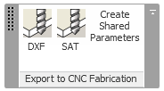

ExportCncFab on GitHub and RevitLookup Update
I am in a hurry, still not finding time to prepare my AU classes, and lots going on.
I published an add-in named ExportWallboard to automatically isolate and export wall parts individually to DXF for CNC fabrication back in March, still for Revit 2013, at the time.
That utility is in use, was renamed to ExportCncFab and has enjoyed some further enhancement since, such as:
- Support for export to SAT as well as DXF
- A beautiful little external application to define a nicer user interface
- Support for per-part export history tracking using shared parameters

The history tracking shared parameters are populated with the following values:
- CncFabIsExported – a Boolean value showing whether an individual part has ever been exported
- CncFabExportedFirst – timestamp of first export
- CncFabExportedLast – timestamp of most recent export
I don't have time to discuss all these enhancements in detail right now, but I wanted to point out their existence and publish the whole thing in its current state on GitHub.
So here, without more ado, is the glorious ExportCncFab GitHub repository sporting the first public Revit 2014 release 2014.0.0.10. Enjoy!
RevitLookup Update
I also published RevitLookup on GitHub and mentioned that some enhancements were already made.
Well, more have been added since by a new contributor Prasadgalle, so we arrived at release 2014.0.0.5. Thank you very much for that, Prasad!
Check it out and please feel free to contribute yourself.
Happy weekend!